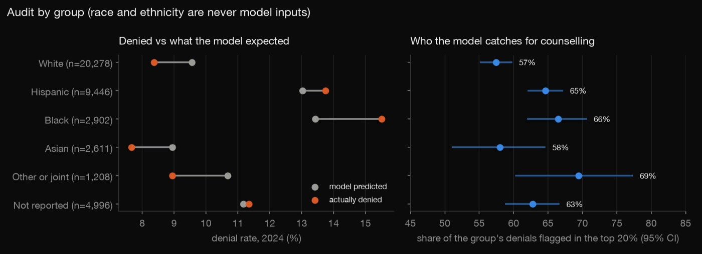
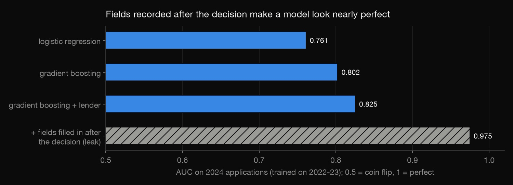
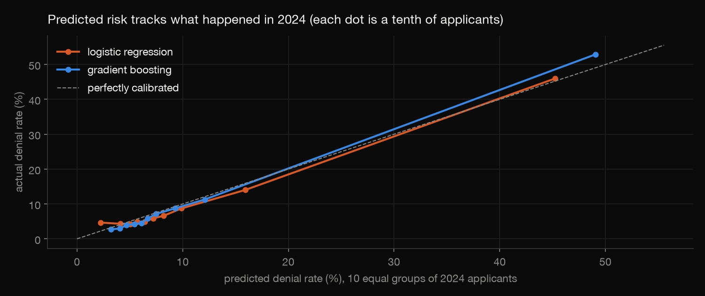
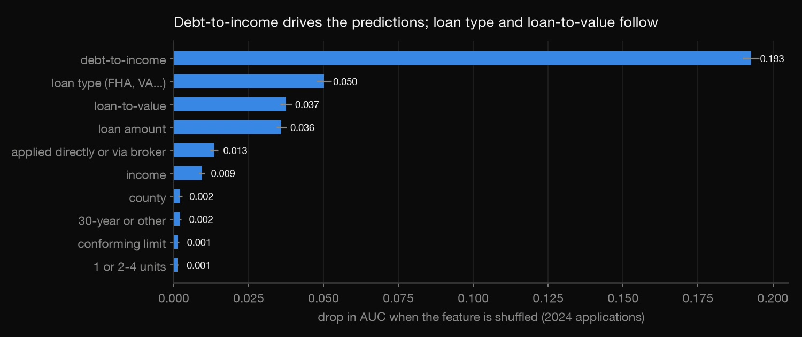
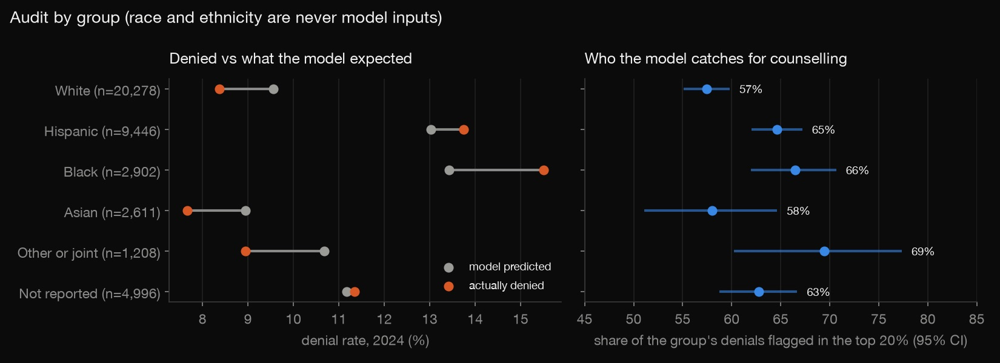
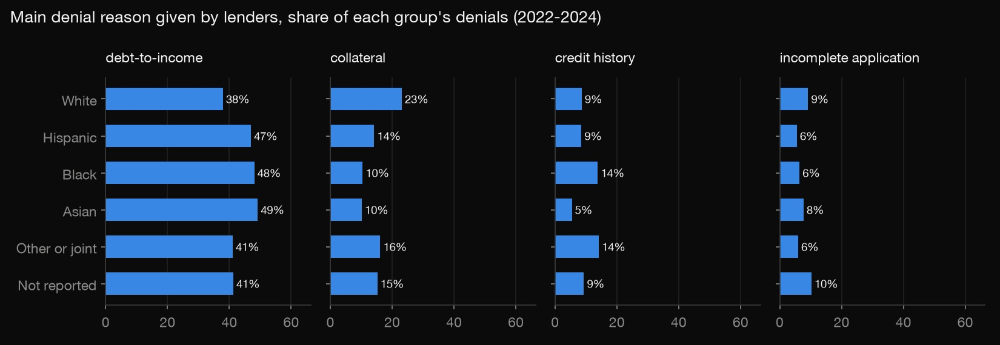

Python · Predictive modeling · 2026-10
Who Gets Denied a Mortgage?
Predicting which Tampa Bay home-purchase applications lenders deny, from public HMDA data: a leakage trap that fakes 0.975 AUC, an honest 0.80 model tested on the following year, and an audit by race and ethnicity.

The target is lenders' past decisions, not whether anyone would repay, and public HMDA has no credit scores. So this is a triage aid for housing counsellors, never an underwriting tool, and the group gaps it finds are not proof of discrimination.
01 — The problem
In Tampa Bay, about one in ten applications to buy a home to live in is denied, often after the applicant has paid application and appraisal fees. Housing counsellors can help people fix a debt-to-income or down-payment problem first, but only if they know whom to help. Can public data flag the applications most likely to be denied, and does such a model treat groups differently?
02 — What I built
A predictive model on the CFPB's public mortgage data (HMDA) for Hillsborough, Pinellas, Pasco and Hernando counties:
- A cleaning funnel that tracks the denial rate at every step.
- A leakage demo: fields filled in after the decision push AUC to 0.975.
- An allowlist of facts known when someone applies; race, ethnicity, sex, age and neighbourhood proxies are excluded.
- Logistic regression vs gradient boosting, trained on 2022–23 and tested on 2024.
- An audit by group: recall, calibration, the gap at the same score, and lenders' stated reasons.
03 — How it was built
- 01
Get the decisions
HMDA requires lenders to report every mortgage application and its outcome.
download.pypulls the 2022–2024 home-purchase decisions for the four Tampa Bay counties from the CFPB's API: 177,971 approved or denied applications. It queries by county, because the metro-area code returned nothing for 2024 after the metro definitions changed.URL = "https://ffiec.cfpb.gov/v2/data-browser-api/view/csv?counties={c}&years={y}&actions_taken=1,2,3&loan_purposes=1" - 02
Clean, and watch the base rate
Dropping rows can quietly change the answer, so the funnel records the denial rate at each step. Fields like debt-to-income are missing more often for denials. Manufactured homes, denied far more often, are a separate market and are left out. "Standard loan" means not for business, not a reverse mortgage and not a line of credit.
Rule Left Denied All decisions 177,971 14.8% Main home, 1st lien 148,621 14.2% Site-built 1–4 units 138,225 11.6% Standard loan 136,615 11.2% DTI reported 135,345 11.1% Income $10k–$2M 133,252 10.9% Value $50k–$5M 132,647 10.6% Term reported 132,397 10.6% - 03
Catch the leak
Many HMDA fields are filled in after the decision, and their mere presence gives the answer away:
- purchaser type: denied loans are never sold;
- preapproval: denied preapprovals are filed under a different code;
- interest rate and costs: missing for every denial;
- underwriting codes and whether the lender reported LTV.
Add them and the model scores 0.975, which looks almost perfect but is useless before a decision exists.

f["price_missing"] = d["interest_rate"].isin(["NA", "Exempt"]).astype(str) - 04
Build from an allowlist and test on the next year
The allowlist names the inputs a counsellor could know before someone applies: income, loan amount, loan-to-value, debt-to-income, loan type, term, conforming limit, channel, units, county, and lender in one variant. Excluded:
- race, ethnicity, sex and age, which are protected by the Equal Credit Opportunity Act;
- census-tract fields such as minority population share, which proxy for race.
check.pyfails if anything else sneaks in. The models train on 2022–23 and are scored on 2024, as if predicting the future. Gradient boosting is well calibrated: in the riskiest tenth it predicted 49% and 53% were denied.
tr, te = yr.isin(TRAIN).values, (yr == TEST).values - 05
See what drives it
Shuffling one input at a time and measuring the drop in AUC shows what the model relies on. Debt-to-income dominates (0.193), then loan type (FHA loans were denied 14.8% of the time, against 9.4% for conventional and 9.2% for VA), loan-to-value and loan amount. Income adds little once debt-to-income is known.

- 06
Audit it by group
Race and ethnicity are used only here, after prediction. The use case decides the metric. Being flagged means getting help, so the question is whether the model misses one group's denials more than another's. It doesn't: it catches 66% of Black and 65% of Hispanic applicants' denials, against 57% of White applicants'.
Calibration tells a different story. Black and Hispanic applicants were denied more often than the model's inputs predict. At the same score, their odds of denial are 1.54× and 1.31× those of White applicants, and adding the lender doesn't shrink the gap. Every group cell has at least 30 applications.

m = sm.Logit(y, sm.add_constant(X)).fit(disp=0) - 07
Check it independently
check.pyre-applies the cleaning and refits all four models. It then recomputes every AUC with a separate rank-based formula, recomputes group denial rates and Wilson intervals against statsmodels, and confirms no published cell is under 30 and no file is row-level.
return (r[y == 1].sum() - n1 * (n1 + 1) / 2) / (n1 * (len(y) - n1))
04 — Results
| Model (2024) | AUC | Caught |
|---|---|---|
| Logistic regression | 0.761 | 57.5% |
| Gradient boosting | 0.802 | 61.6% |
| + lender | 0.825 | 63.9% |
| Leaky (wrong) | 0.975 | 94.4% |
"Caught" is the share of 2024 denials among the 20% of applicants flagged as riskiest, a counsellor's realistic capacity. Flagged applicants were denied 32% of the time, against 10.4% overall.
| Group | Denied | Predicted | Caught |
|---|---|---|---|
| White | 8.4% | 9.6% | 57% |
| Hispanic | 13.7% | 13.0% | 65% |
| Black | 15.5% | 13.4% | 66% |
| Asian | 7.7% | 8.9% | 58% |
| Other/joint | 8.9% | 10.7% | 69% |
| Not reported | 11.3% | 11.2% | 63% |
| At the same score | Odds vs White |
|---|---|
| Black | 1.54 (1.34–1.77) |
| Hispanic | 1.31 (1.19–1.44) |
| Not reported | 1.25 (1.10–1.41) |
| Asian | 0.97 (0.80–1.18) |
When groups have different base rates, calibration and equal error rates can't all hold at once, so no single number makes a model "fair". The gap at the same score is what a fair-lending review would investigate with the full lender file. That file includes credit scores, which public HMDA lacks: lenders cite credit history for 14% of Black applicants' denials vs 9% of White applicants'.
05 — What I'd do next
- Add withdrawn and incomplete applications as a third outcome, since some may be quiet denials.
- Repeat for refinances and for other Florida metros.
- A counsellor-facing page that turns the top drivers into concrete advice (lower debt-to-income, a larger down payment).